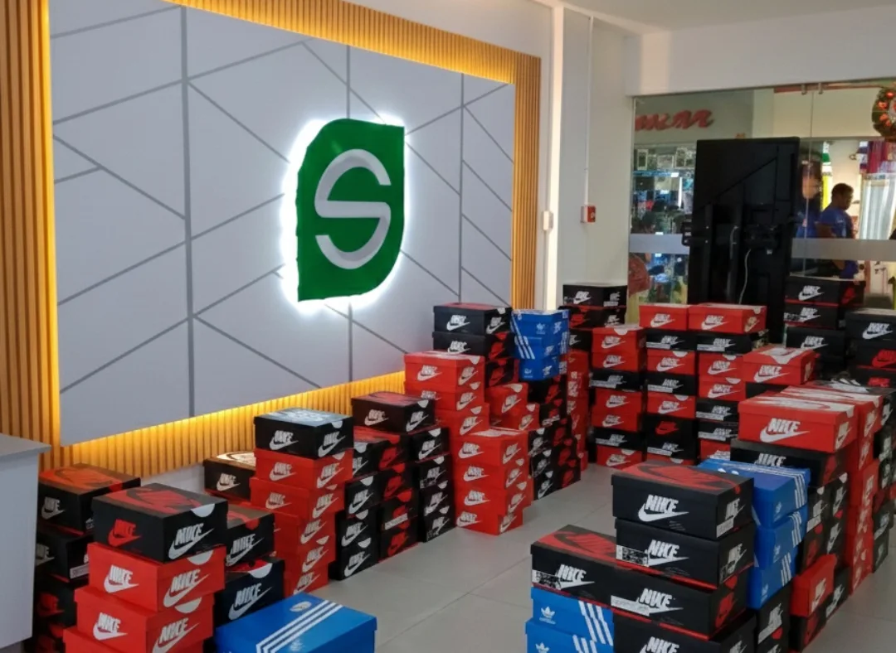
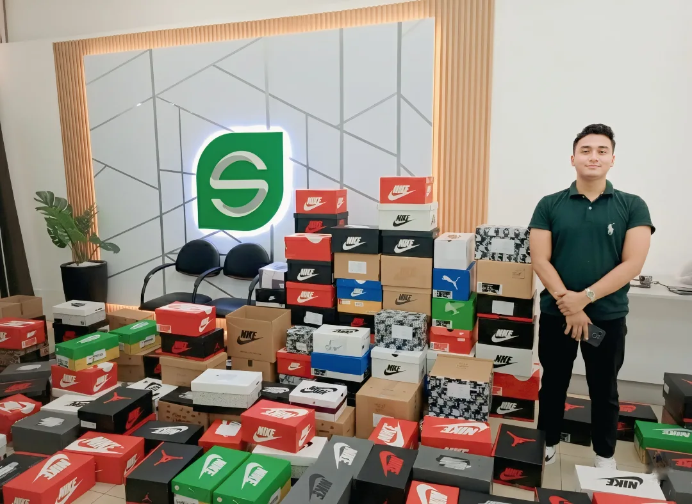

Volver al inicio
Mi trayectoria
Una historia de acción, visión y resultados.
De Guayaquil, Ecuador. Empecé desde cero, con recursos limitados y una meta clara. Hoy dirijo dos marcas reales y asesoro empresas que quieren crecer de verdad.
Capítulo 01 · Inicio
De cero, con visión clara
Empecé desde cero, con recursos limitados y una meta clara: construir una carrera capaz de impactar marcas reales con marketing inteligente y ejecución sin excusas.

Capítulo 02 · Escalamiento
De operador a Estratega
Con disciplina, formación y ejecución, pasé de operar solo a liderar equipos, procesos y estrategias para empresas tecnológicas en mi país.

Capítulo 03 · Hoy
Dueño, mentor y Estratega
Hoy soy dueño de dos empresas y trabajo como especialista en marketing, ayudando a marcas a ganar posicionamiento, autoridad y conversión.